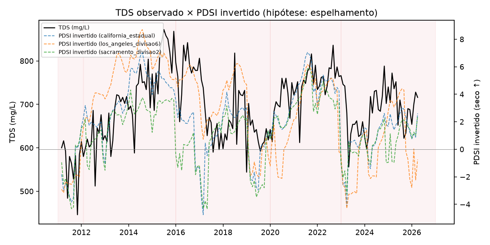
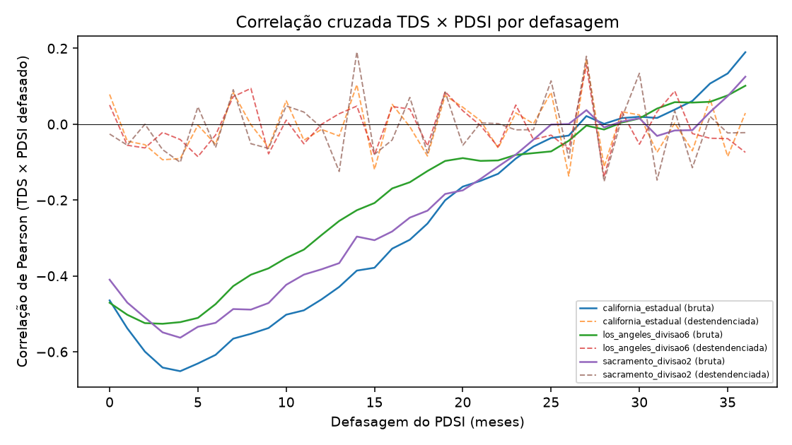

Objetivo desta lição: saber descartar, com evidência, a hipótese mais óbvia de banca ("isso não é só um problema de troca de sensor/código de monitoramento?") e saber ler os dois gráficos de PDSI que confirmam o mecanismo com uma variável externa e independente.
Passo 1: a pergunta óbvia de banca, respondida com dados
A Lição 0002 mostrou que a tendência muda de sinal quando se removem os primeiros anos, e que esses anos coincidem com a transição de código EFF-001→EFF-001A (~2012). A pergunta natural é: "então o padrão cíclico é real, ou é só um degrau artificial de troca de sensor?"
A hipótese foi testada e rejeitada — com 4 evidências, não com "achismo":
1. A transição é contínua mês a mês: 580 → 598 mg/L. Um degrau de instrumentação costuma criar um salto abrupto, não uma continuação suave.
2. Mesmo método analítico antes e depois da transição.
3. Mesmo limite de detecção (MDL) antes e depois dessa transição específica — atenção: isso é diferente da troca de MDL de 2011-06-04 vista na Lição 0002, que é um evento anterior e separado.
4. Mesmas coordenadas geográficas — é o mesmo ponto físico de amostragem, só o código mudou.
Conclusão:o que existe não é um degrau de instrumentação, é um padrão cíclico real: alta de 563→808 mg/L (2011–2015, 1ª seca), queda a 636 mg/L (2019), alta a 768 mg/L (2022, 2ª seca), recuo depois. Um teste de tendência monotônica simplesmente não tem poder estatístico para descrever um padrão que sobe e desce — por isso a fragilidade da Lição 0002 não contradiz isso, ela só mostra que "reta única" é a descrição errada.
Qual evidência pesa contra a hipótese de que a transição EFF-001→EFF-001A criou um degrau artificial?
Passo 2: testar o padrão cíclico contra uma variável externa — o PDSI
Em vez de só inspecionar visualmente a própria série de TDS (o que seria circular — "vejo um ciclo porque quero ver um ciclo"), o projeto testou o padrão contra o PDSI (Palmer Drought Severity Index, NOAA NCEI) — o mesmo índice climático que o estudo de referência da Southern California Salinity Coalition (2018) usou para 26 estações do sul da Califórnia. Isso é o que torna o argumento causal forte: o PDSI não foi calculado a partir do TDS, é uma medida independente de seca.
Esse relatório é o único dos 5 estudos citados no projeto com texto completo lido na íntegra (não resumo) — é a referência que motivou testar o PDSI aqui. Detalhe: Bibliografia do projeto.

Figura do artigo (resultados.tex, linha 354): "TDS observado × PDSI invertido, com os 5 regimes identificados sombreados."
Como ler este gráfico:
1. Duas linhas sobrepostas: TDS observado (a série que já conhece) e o PDSI invertido — invertido porque PDSI negativo = seca, e a hipótese é "seca sobe TDS", então inverter alinha visualmente os picos.
2. Faixas sombreadas de fundo marcam os 5 regimes identificados (os mesmos da Lição 0001/0002: alta 2011-2015, queda até 2019, alta até 2022, recuo depois).
3. O que procurar: se as duas linhas sobem e descem juntas dentro de cada faixa sombreada, isso é evidência visual de sincronia. O teste estatístico forte está na tabela a seguir, não só no olho — mas o gráfico é o que a banca vai olhar primeiro.

Figura do artigo (resultados.tex, linha 361): "Correlação cruzada TDS × PDSI por defasagem (0-36 meses), bruta e destendenciada, para as três séries de PDSI."
Como ler este gráfico (o mais tecnicamente denso da lição):
0. Primeiro, o que é "correlação cruzada por defasagem": não é a correlação simples entre duas séries (um único número). O procedimento desloca a série de PDSI k meses para frente, recalcula a correlação com o TDS, anota o resultado, e repete para cada k de 0 a 36. O gráfico é esse "filme" de correlações — uma por defasagem testada — não uma foto única. A intuição: se a seca de hoje só afeta o TDS daqui a alguns meses (o efeito leva tempo para se propagar pelo sistema), a correlação no deslocamento certo (k≈3-4) deve ser mais forte que a correlação no deslocamento zero.
1. Eixo X = a defasagem k em meses (quantos meses o PDSI "antecede" o efeito no TDS); eixo Y = o coeficiente de correlação cruzada naquela defasagem. Há 3 linhas, uma por série de PDSI testada (Califórnia estadual, divisão de Los Angeles, divisão de Sacramento — a origem do State Water Project) — testar 3 fontes geográficas diferentes é uma checagem de robustez: se só a série "certa" desse resultado, seria mais fácil suspeitar de coincidência.
2. Cada série de PDSI aparece em duas versões: a correlação bruta (sem remover tendência) e a destendenciada (removendo a tendência de longo prazo de cada série antes de correlacionar, para não confundir "as duas sobem com o tempo" com "uma realmente responde à outra"). Isso é crucial: a correlação bruta é forte (r=-0,53 a -0,65) mas a destendenciada é bem mais fraca e muda de sinal (r=+0,15 a +0,19).
3. Pico esperado: por volta de 3-4 meses de defasagem — é onde a correlação bruta é mais negativa (lembrando que "mais negativa" aqui = mais forte, porque PDSI baixo/seco associa com TDS alto).
4. Pergunta de banca quase certa: "se a correlação destendenciada é mais fraca e muda de sinal, o PDSI explica o TDS ou não?" Resposta honesta (ver tabela abaixo): o PDSI explica o nível médio de cada regime (a seca "empurra" o patamar do TDS para cima por um tempo), mas não explica bem a oscilação fina mês a mês dentro de um mesmo regime. É uma leitura mais modesta que "seca prevê TDS mês a mês", e é a leitura correta a defender.
Série de PDSI
Defasagem
r (bruta)
p (dof efetivo)
LMG PDSI
Califórnia estadual
4 meses
-0,651
0,0003
79,3%
Los Angeles (div. 6)
3 meses
-0,526
0,0126
67,5%
Sacramento (div. 2)
4 meses
-0,563
0,0012
72,6%
Fonte: Tabela \ref{tab:pdsi-resultados} do artigo. "dof efetivo" = graus de liberdade efetivos corrigidos por autocorrelação (Pyper & Peterman, 1998) — sem essa correção, o p-valor seria artificialmente otimista porque a amostra "real" de pontos independentes cai de ~180 para 22-30.
O que a correlação PDSI x TDS destendenciada (mais fraca, sinal trocado) realmente indica?
Recall sem olhar: cite as 4 linhas de evidência que ligam PDSI a TDS (parágrafo "Quatro linhas de evidência" do artigo).
1. Correlação bruta forte e significativa mesmo após corrigir graus de liberdade efetivos. 2. Changepoints detectados independentemente no PDSI (sem informar datas do TDS ao algoritmo) coincidem com as 4 viradas de regime do TDS (2012, 2015, 2019, 2022). 3. Decomposição LMG atribui 68-79% da importância relativa ao PDSI (vs. vazão), mesma ordem de grandeza do benchmark SCSC (~88% água de origem). 4. O coeficiente do PDSI permanece altamente significativo (p<0,0001) mesmo controlando por 5 dummies de regime — carrega informação além de só marcar o período. Desfecho declarado a priori (dos 3 possíveis no protocolo do teste): "o PDSI explica bem os ciclos observados" — mas o mecanismo opera no nível de regime, não como resposta de alta frequência.
Ficou alguma dúvida? Pergunte ao agente (Claude Code) agora — ele pode explicar a correção de Pyper & Peterman em mais detalhe, por que a decomposição LMG é usada em vez de um R² simples, ou simular a pergunta de banca "por que three séries de PDSI e não uma só?".